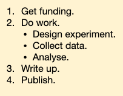

Unit 01: Problem Solving I
Contents
Unit 01: Problem Solving I#

Authors:
Dr James Cumby
Dr Antonia Mey
Emails: james.cumby@ed.ac.uk
Overview#
Programming is almost entirely about problem solving, i.e. how do you take a complex problem and break it down in to manageable steps that a computer can perform. Whilst this is a useful skill for programming and data analysis, it is much more generally applicable, both within your degree and beyond. Importantly, problem solving is a skill that has to be learned, and this unit (and this course in general) will try to develop this skill.
Learning objectives:#
By the end of this unit, you should be able to:
Interact with a Jupyter notebook
Break a complex problem into smaller steps;
Consider how those steps might be implemented as code (developed more later in the course);
Use pseudocode to develop simple algorithms
Some of the content is adapted from Software carpentry lessons.
Table of Contents#
Next notebook: Problem solving II
Link to Jupyter documentation:#
You can find useful information about using Jupyter at docs.jupyter.org.
Further reading:#
Kenneth Reitz and Tanya Schlusser, The Hitchhiker’s Guide to Python, 2nd Ed., Sep 2016, ISBN: 978-1491933176
Christian Hill, Learning Scientific Programming with Python, 2nd Ed, Dec 2020, ISBN: 978-1108745918
Al Sweigart, Automate The Boring Stuff With Python, 2nd Ed., Oct 2019, ISBN: 978-1593279929
Eric Matthes, Python Crash Course, 2nd Ed., May 2019, ISBN: 978-1593279288
Alex Martelli, Anna Ravenscroft, Steve Holden, Python in a Nutshell, 3rd Ed., 2017, ISBN: 978-1449392925
Useful Jupyter Commands: Jupyter Cheat Sheet
To run the currently highlighted cell and move focus to the next cell, hold ⇧ Shift and press ⏎ Enter;
To run the currently highlighted cell and keep focus in the same cell, hold ⇧ Ctrl and press ⏎ Enter;
To get help for a specific function, place the cursor within the function’s brackets, hold ⇧ Shift, and press ⇥ Tab;
1 Getting Started with Jupyter Notebooks#
1.1 Following the “lecture” #
Slides cover the main points in the session
Notebooks serve as complete ‘handouts’
Don’t try to read the notebook as we go!
My suggestion is:
Use ⇧ Shift and ⏎ Enter to keep your notebook in the same place as the talk
If you want to make extra notes, edit existing cells (and save a copy of the notebook after!)
Over the next ten units you will learn how to use computer programming to help with chemistry. We will focus on Python: an easy-to-learn, but very powerful, programming language. As well as powering many of the apps on your phone, Python is widely used in many different disciplines.
Python code can be run in many ways, but we will use Jupyter Notebooks like the one you’re reading currently. Jupyter Notebooks allow you to combine live code and explanatory text in the same document, and can work like a digital lab book for computer code.
1.2 Tasks and Solutions#
There are Tasks in each unit for you to try by yourself. These are shown in green, like this:
This is a description of the task. Try to do the task yourself first!
If you get stuck, the solutions are provided in a drow-down window below the task description:
Click here to see the solution to Task xx.
# Solution code
# Try the task yourself first
# You can ask demonstrators for help
Try to avoid copy-pasting solutions.
There are also some Advanced tasks which you should only attempt if you have time. Similarly, there are also extra exercises shown in yellow:
This is a description of an extra exercise that you can try out if you have time.
Example tasks are in the similar format to the above, but are worked through in a live session.
2. Notebook Layout#
A Jupyter notebook consists of a series of cells which can contain either formatted text (a Markdown cell) or executable code (a code cell). The type of a cell can be changed using the toolbar at the top of the page.
For example, if you click on this cell it will be highlighted by a box, and the toolbar will display ‘Markdown’:

The cell below is a code cell. In addition to showing Code in the drop-down box (try clicking on it!), code cells also display the text In []: to the left-hand side. If the code cell has been executed, a number will appear between the square brackets.
Jupyter Notebooks contain cells:
# this is a code cell
Cells contain either code or formatted text (Markdown) and can be switched from the toolbar:
Command mode and edit mode #
In Jupyter, each cell can be switched between two modes:
- Edit Mode
- Allows you to modify the text or code
- Command mode
- Allows you to execute the code in a cell
Press ⏎ Enter to switch to edit mode
Esc will switch back to command mode
By default the notebook begins in command mode.
Markdown cells #
Markdown cells can display formatted text and pictures, and are an excellent way to describe what your code does and discuss the results (imagine a lab report with interactive calculations). I strongly encourage you to use Markdown cells in your work!
In command mode a markdown cell might look like this:

Then, when you press ⏎ Enter, it will change to edit mode:

Now, when we press Esc, it will change back to command mode:

Notice that the markdown cell no longer looks like it did originally; we need to run the cell in order to display the formatted markdown. Do this by pressing Ctrl and ⏎ Enter, and then it will go back to looking like it did originally:
Your turn!#
Test out this cell, switching between command mode, edit mode and running the cell.
Code cells #
Code cells contain code that should run, and possibly produce an output (such as graphs, tables, numbers, etc).
Similar to Markdown cells, code cells have both command mode:

and edit mode (switch to edit mode using ⏎ Enter):

Pressing escape will go back to command mode again:
The main difference between markdown and code cells is that if we press Ctrl and ⏎ Enter, this will run the code in the code cell:

Running code cells #
Code cells can contain any valid Python code in them. When you run the cell, the code is executed and any output is displayed.
Your turn:#
Try running the following cell and see what it prints out (don’t worry about understanding the code for now):
print("Printing cumulative sum from 1-10:")
total = 0
for i in range(1, 11):
total += i
print( f'Sum of 1 to {i} is {total}')
print( 'Done printing numbers.' )
You’ll notice that the output beneath the cell corresponds to the print statements in the code. Here is another example which only prints out the final total.
total = 0
for i in range(1, 11):
total += i
print(total)
3 The Jupyter Kernel #
The kernel is in charge of executing Python code.
When you first start a notebook, you are also starting what is called a kernel. This is a special program that runs in the background and executes Python code. Whenever you run a code cell, you are telling the kernel to execute the code that is in the cell, and to print the output (if any).
Restarting the kernel#
If you are sure your code is correct but it keeps giving you errors then restarting the kernel often helps.
The restart kernel button is the circular arrow in the toolbar (pointed to by the red arrow in this image).

Help with Jupyer Notebooks #
Tasks #
Please work through these tasks in groups of two or three. Don’t worry if you don’t finish the in the alloted time!
In the Jupyter notebook page are you currently in Command or Edit mode? Switch between the modes.
Use the shortcuts to generate a new cell.
Use the shortcuts to delete a cell.
Use the shortcuts to undo the last cell operation you performed.
Click here to see solution to Task 1.1
switch between command and edit modes using ⏎ Enter and Esc
Add a cell in command mode either above (A) or below (B) the current one
Use D, D from command mode to delete a cell
Z will undo the deletion
Create a nested list in a Markdown cell in a notebook that looks similar to this (the bullet design will depend on your browser settings):

# FIXME
Click here to see the solution to Task 1.2.
Markdown Input:
1. Get funding
2. Do work.
- Design Experiment
- Collect data
- Analyze
3. Write up.
4. Publish
Rendered Output:
Get funding
Do work.
Design Experiment
Collect data
Analyze
Write up.
Publish
What happens if you write some Maths in a code cell and execute it?
What happens if you then switch it to a Markdown cell? For example, put the following in a code cell:
6*7+12
# FIXME
Click here to see the solution to Task 1.3
- Code cell
- Math operations are performed and the numerical answer returned
- Markdown cell
- Operations are simply rendered as text (see task 1.4 for rendering equations)
Standard Markdown (such as we’re using for these notes) won’t render equations, but the Notebook will.
Create a new Markdown cell and enter the following:
$$\sum_{i=1}^{N} 2^{-i} \approx 1$$
(It’s probably easier to copy and paste.) What does it display?
What do you think the underscore (_), circumflex (^) and dollar signs ($) do?
# FIXME
Click here to see the solution to Task 1.4.
Dollar signs ($) surrounding text cause it to be rendered in ‘math mode’
Investigate the difference between single and double dollars
Underscore (_) causes the next character (or group surrounded by curly brackets, {..}) to be subscripted
Circumflex (^) works to superscript
Close your Jupyter notebook and restart it.
Restart the Kernel
Try opening a blank notebook
Try to create a table using a markdown cell, containing for instance the formula masses of the first 6 elements.
Click here to see the solution to Exercise 1.6
Element name |
Element mass (g mol-1) |
|---|---|
H |
1.008 |
He |
4.003 |
Li |
6.941 |
Be |
9.012 |
B |
10.811 |
C |
12.011 |